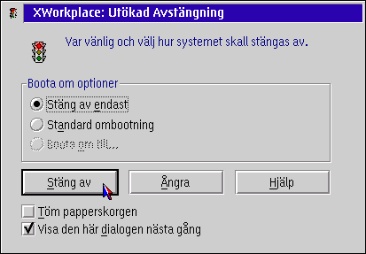
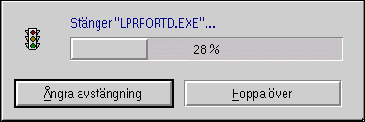

Viktig notering: &xshutdown; „r avaktiverad som standard efter installation f”r att undvika f”rvirring. Du m†ste aktivera &xshutdown; i det nya "&xwp; Setup" objektet.
Efter aktivering av &xshutdown;, kommer ett val av "Avst„ngning" fr†n Skrivbordets kontextmeny att starta &xwp;'s avst„ngningsprocedur ist„llet f”r &os2;'s standardavst„ngning.
Efter valet av "Avst„ngning", kommer en dialogbox liknande den f”ljande att poppa upp:

De viktigaste nya funktionerna i &xshutdown; „r:
Du kan t.o.m. skapa dina egna ombootningsegenskaper, t.ex. boota om till en speciell Boot Manager
partition direkt. Detta „r f”rklarat i detalj n„r du trycker knappen "Aktioner" p† sidan 1 i
"XSkrivbord" hos Skrivbordets notbok med inst„llningar.

DEVICE=X:\OS2\BOOT\DOS.SYS
d„r X: motsvarar din OS/2 bootenhet.
Du kan konfigurera (och st„nga av) den Ut”kade Avst„ngningen p† en ny inst„llningsida hos notboken med Skrivbordet's Inst„llningar.
Om du „r intresserad av hur &xshutdown; fungerar internt, var v„nlig och titta p†
respektive sida i kapitlet "&xwp; Interna".